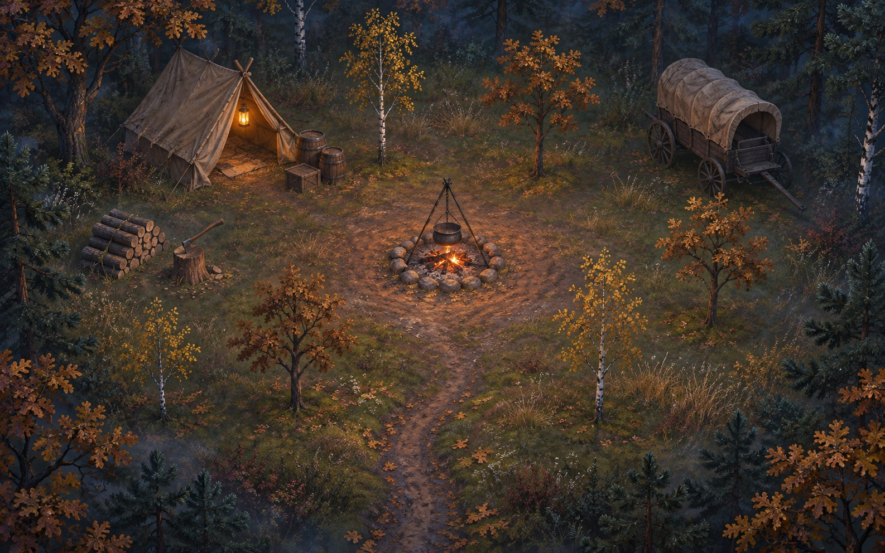

Узлісся · вступний квест
Вогонь на узліссі
Сонце сіло за дуби. На галявині біля лісу стоїть віз, намет і ледь живе вогнище. Хтось там є, і схоже, їм потрібна допомога.
ІдиКлацни або торкнись землі.
ГовориПідійди до людини й клацни на неї.
ПредметиЛише три віконця. Зайве викидай.